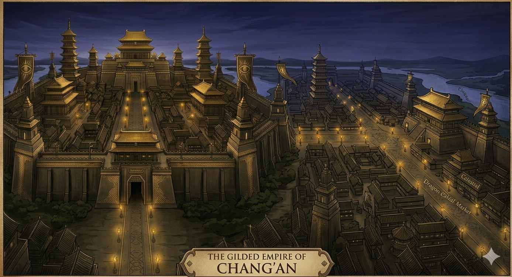
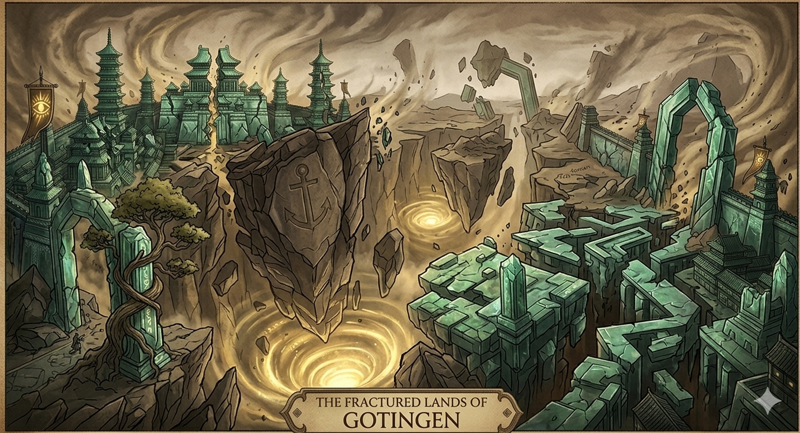
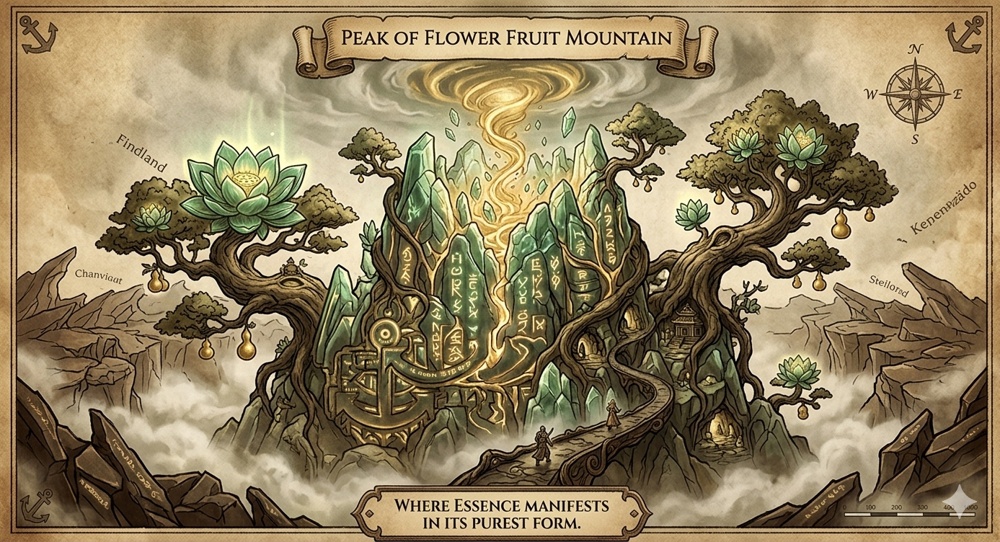

The world is not what it seems, nor is it what it once was. There was a time—long before memory could be trusted—when the land was whole, when the horizon marked the end of sight and not the beginning of uncertainty. In those distant ages, people lived within boundaries they understood, naming their kingdoms and shaping their histories in the Gilded Empire of Chang'an. They believed that the world obeyed rules that could be learned and preserved. But that certainty began to fade the moment the first journey was taken.

No one remembers who first walked west. No name remains, no record survives. Only the consequence endured. Those who departed never returned, yet something of them lingered. The world itself began to change—subtly at first, like a whisper carried on the wind. Time lost its strict rhythm. Distance became unreliable. And stories, once fixed and recorded, began to shift depending on who spoke them. They came to call it the Westward Expanse. It was never simply a direction. It was a transformation that fractured the very soil, leaving behind anchor-points like Gotingen and the eerie silence of Kyathme.
To travel west was not merely to move across land, but to step into a place where reality itself seemed unfinished. The further one journeyed, the less the world resembled what had been left behind. Settlements appeared abandoned yet untouched by decay. Paths curved into themselves. Days stretched or collapsed without warning. Some travelers claimed to relive moments they had not yet experienced. Others forgot entire portions of their lives as if they had never existed. Few who entered remained unchanged. Fewer still remained themselves.

Yet, despite the fear, the journey never ceased. There are those who believe the West holds truth—the kind of truth that cannot be taught or inherited, only experienced. They call themselves Seekers, and they embrace the transformation, even as it leads them toward the scorching heat of the Flaming Desert. To them, identity is not something to preserve, but something to evolve. They walk willingly into uncertainty, accepting that what they become may no longer resemble what they were. Opposing them are the Keepers of Origin, who see the West not as revelation, but as corruption. They believe that identity is sacred, guarding the eastern borders of the Empire against a creeping, unknowable change.
Between these forces lies the silent tension of a world unsure of its own nature. Power, too, began to emerge in the wake of the first journey. Not magic in the traditional sense, but something deeper—something intrinsic. It came to be understood as Essence and Will. This power is most volatile in the Underwater Dragon Palace, where the pressure of the deep manifests the soul. Essence is what one is at their core; Will is the strength to remain oneself. Those who fail to maintain their identity lose control of their Essence, dissolving into formless entities or becoming defining fragments of the Expanse itself.
Over time, a hierarchy emerged—not of rank, but of stability. From the lowly Drifters to the Awakened, and finally to the Transcendent who seek the legendary Flower Fruit Mountain. At the peak of this hierarchy reside the greatest mysteries: the Hollow King, seeking to erase all identity; the Flame Ascendant, walking through ruin; and the Time-Bound Oracle, trapped between moments. These are not mere enemies; they are outcomes—possibilities taken too far. The history of this world is written in consequences. And now, in the present, a new journey begins. It is the beginning of everything.
